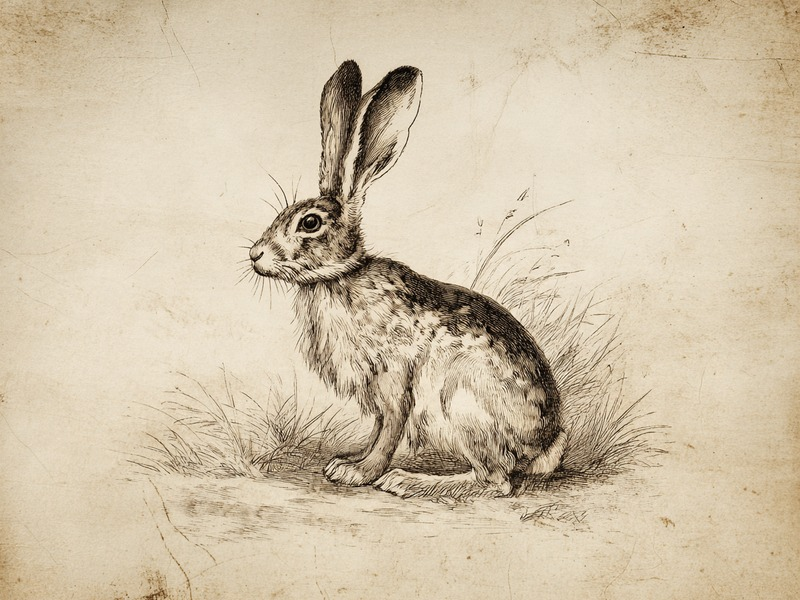

うさぎが食べているのは、ふつうの糞ではなく「盲腸便」。腸内細菌が作った栄養たっぷりの塊を食べ直す、大切な二度目の食事なのです。 What rabbits eat is not ordinary droppings but cecotropes: nutrient-rich clusters made by gut bacteria and taken in as a vital second meal.
🔍 ちょっと寄り道:動物同士に相性があるように、人同士にも相性があります。気になった方は相性診断を試してみてください。
腸を2回通る、二度目の食事
うさぎが食べ直しているのは、腸内細菌が盲腸で作る栄養の詰まった「盲腸便」で、これが二度目の食事にあたるのだそうです。うさぎの体には、食べたものを消化管に2回通す、少し変わった仕組みがあるそうです。1回目に通ったとき、盲腸(大腸の入り口にある袋状の部分)では腸内細菌が食べかすを分解し、栄養の詰まった特別な糞を作ります。これが「盲腸便」で、ふだん見かけるコロコロした糞とは別物。柔らかく、小さな粒が房のように集まった形をしています。うさぎはこの盲腸便を、肛門から出てくるそばから直接口で受けとって食べ直します。この食べ直しを「食糞」と呼ぶのだそうです。盲腸便の中身は驚くほど栄養豊富で、粗タンパク質(食べ物に含まれるタンパク質のおおよその量)が約28〜30%も含まれているのだとか。さらにビタミンB12は、うさぎが1日に必要とする量の100倍もの量が腸内細菌によって合成されているそうです。腸の中に、専属の栄養工場を持っているようなものなのです。
出典: House Rabbit Society「Cecotropes」rabbit.org
飼い主が見かけないのは健康の証
健康なうさぎは盲腸便を出てくるその場で食べきってしまうため、飼い主が見かけないのはむしろ健康な証なのだそうです。「うちの子はそんなもの食べていない」と思う飼い主さんも多いかもしれません。けれどそれは見逃しているのではなく、出てくるそばから食べきってしまうのでケージの中に残ることがほとんどない、というだけなのです。私たちの目に触れる前に、二度目の食事はもう終わっている、というわけです。一見すると奇妙に思えるこの行動も、仕組みを知れば理にかなっています。一度の消化では取り切れない栄養を、腸内細菌の力を借りてもう一度取り込む。うさぎにとって食糞は、汚れた癖ではなく、体に組み込まれた大切な食事の一部なのです。
盲腸便とふつうの糞は、見た目も出てくるタイミングもまったく違います。健康なうさぎほど食べ終えたあとに残らないため、飼い主が仕組みを知っておくと、日々の健康チェックの助けにもなりそうです。